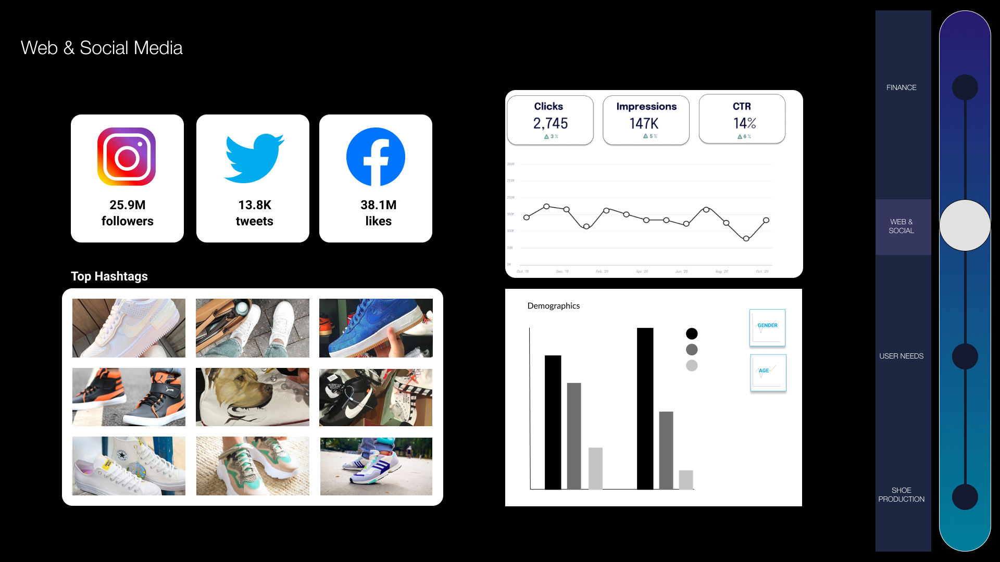
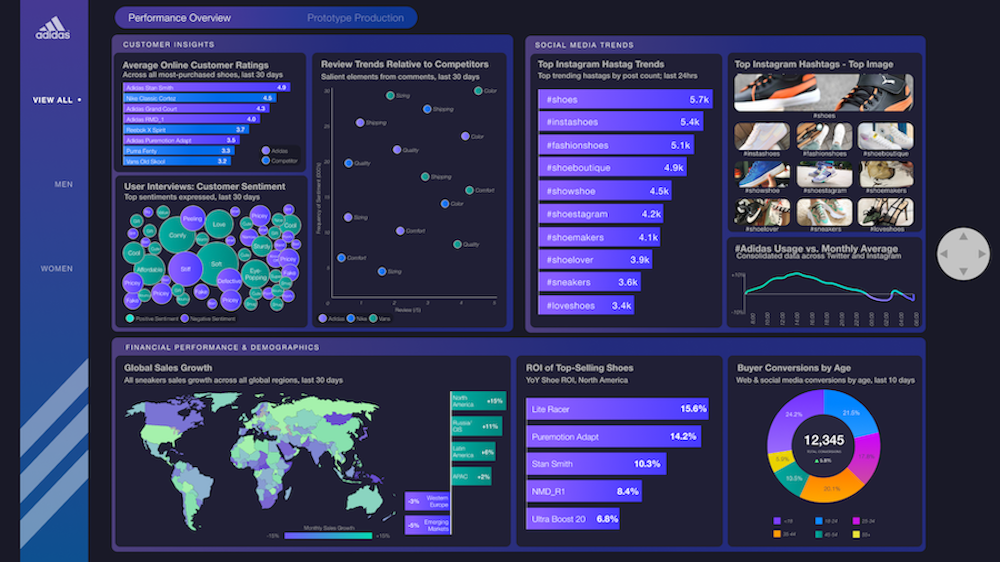

01 Data
The first step with a large spreadsheet of data was to break down the information and search for patterns to the reviews. We recorded both complaints and reviews we had noticed.
02 Affinity Map
The affinity map is a compilation of the main points of the reviews. After collection, we categorized the points under different topics and identified important common elements, as well as brainstormed data that we currently did not have that would be prudent to include in our dashboard. We sorted in a rose, bud, thorn format:
1. Rose: data to keep
2. Bud: data to modify
3. Thorn: data to add
1. Rose: data to keep
2. Bud: data to modify
3. Thorn: data to add
03 State Model
We considered both the unique and overlapping needs of the dashboard's intended users, then mapped consumer data to the state model. We also outlined the effects and interactions between needs our user groups to gain a better understanding of the relationship between them.
04 Sketching
We set out to make rough sketches of how we could organize the data we had into charts, graphs, and other forms, and how we would arrange those forms on the dashboard. Common traits in our sketches included customizability and high-level information; we had taken different pieces of information and arranged them into "widgets".
05 Iteration 1
We noticed that the graphs we created tended to fall within one of four categories, which we planned on splitting into four different pages:
1. Finance
2. Customer Needs
3. Web & Social Media
4. Shoe Production
These categories helped naturally determine the structure of the dashboard. In order to present information that could help users attain their goals, we defined the central goal: unite the interests of the users to improve collaboration.
1. Finance
2. Customer Needs
3. Web & Social Media
4. Shoe Production
These categories helped naturally determine the structure of the dashboard. In order to present information that could help users attain their goals, we defined the central goal: unite the interests of the users to improve collaboration.

06 Iteration 2
We went through our existing graphs and other elements and decided to keep, alter, or remove them based on our central goal. We asked ourselves questions from different users' perspectives: would an executive care about what the top shoe hashtags are? What steps could a product designer take with the sustainability scores?
We split the dashboard into two pages: Performance Overview and Prototype Production. Performance Overview was divided into tabs with data for all customers, then between male and female customers. Prototype Production presented a view of overall production data, then was divided into the five shoe prototypes.
We split the dashboard into two pages: Performance Overview and Prototype Production. Performance Overview was divided into tabs with data for all customers, then between male and female customers. Prototype Production presented a view of overall production data, then was divided into the five shoe prototypes.


07 Control
To navigate between the different pages of the dashboard, we prototyped a simple joystick control that wouldn't detract from the focus on the data. The joystick encapsulates movement between pages and tabs, as well as turning the dashboard on and off.
08 Final
For our final dashboard iteration, we further consolidated a number of graphs for clarity and to enhance their visual elements.
The first page gives a performance overview for existing shoes on the market, and customer responses and needs. The second prototype production page gives insight to the top five shoe prototypes.
The first page gives a performance overview for existing shoes on the market, and customer responses and needs. The second prototype production page gives insight to the top five shoe prototypes.